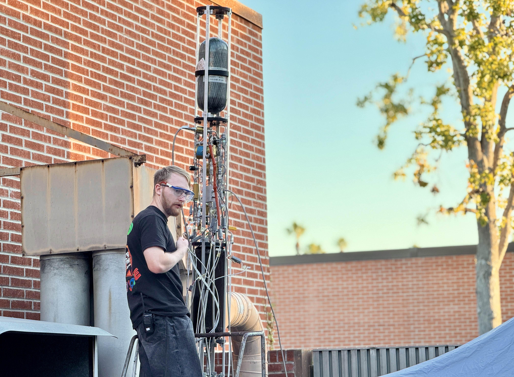
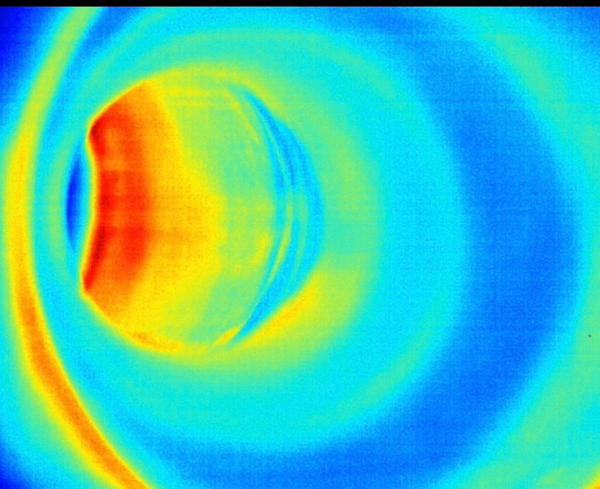

Feed System Characterization
Water Flow 2 — Test Director
Two water flow campaigns were completed to characterize the pressure drop, flow rate, and effective flow coefficient of the Theseus feed system before cryogenic testing and static fire.
I served as Test Director for the second water flow campaign. I directed the procedure, coordinated test personnel, enforced GO and NO-GO criteria, monitored pressure transducer data, and supervised water collection during each run.

Experimental characterization of the Theseus feed system.
Initial Campaign
Water Flow 1
The university limited the high-pressure COPV to 500 psi. During the first campaign, the main valves remained open for nearly the complete planned burn duration.
As the COPV discharged, its pressure fell until the inlet pressure of the dome regulators approached their outlet pressure. The regulators could no longer maintain stable control, causing the pressure data near the end of each run to become unreliable.
Observed Problem
Loss of Regulator ControlLong-duration runs allowed the COPV pressure to decrease below the range required for stable dome-regulator operation.
Corrected Campaign
Water Flow 2
For the second campaign, we reduced each run to approximately three to five seconds. This prevented excessive COPV pressure decay while still providing enough steady-flow data for analysis.
The corrected test produced stable pressure measurements that were used to calculate experimental system pressure drop, volumetric flow rate, and flow coefficient.
The experimental results were compared with theoretical calculations and used to help determine the final LOX and fuel tank pressures before static fire.
Corrective Action
Three-to-Five-Second RunsShorter runs maintained sufficient regulator inlet pressure and produced stable, repeatable test data.
Set the required test pressure and confirm test readiness.
Flow water through the complete vehicle feed system.
Monitor tank and engine-inlet pressure transducers.
Measure discharged water mass and flow duration.
Determine average volumetric flow through each feed path.
Compare measured pressure drop and Cv with theory.
Data Reduction
Experimental Flow Calculations
When collected water mass was measured, volume was calculated using the density of water.
Because the test fluid was water, its specific gravity was approximately one.
Analytical Comparison
Theoretical Pressure Drop
Reynolds number was calculated for each tubing section to characterize the flow regime.
The Swamee-Jain equation was used to calculate the Darcy friction factor without an iterative solution.
Major losses represented friction through straight sections of tubing.
Minor losses represented valves, fittings, bends, tees, and other inline components.
The analytical pressure loss was compared with the pressure difference measured between the tank and engine-inlet pressure transducers.
Test Operations
Leading Water Flow 2
Result
Feed System Characterized
The second campaign produced stable pressure and flow measurements. Experimental pressure drop and flow coefficient were compared with analytical predictions and used to support the final LOX and fuel tank-pressure selections before static fire.
Cryogenic Verification
LOX Cold Flow Testing
Two LOX cold flow campaigns were performed to verify that the oxidizer system could be loaded, chilled, pressurized, and flowed normally under cryogenic conditions before static fire.
Cold flow testing allowed the team to identify cryogenic leakage, thermal contraction, hardware failures, and procedural issues that could not be reproduced during room-temperature water testing.
Cold Flow 1
Integration Issues Identified
The chilling phase was skipped during the first cold flow. When LOX entered the system, the hardware experienced rapid thermal contraction and severe cryogenic loading.
The composite overwrap on the LOX tank delaminated, and several overtorqued Swagelok fittings in the lower fluids assembly developed leaks under cryogenic conditions.
Corrective Actions
Hardware and Procedure Updates
- Added a controlled system chilling phase
- Reworked leaking lower-fluids fittings
- Reviewed Swagelok installation practices
- Inspected oxidizer-system hardware
- Updated the LOX loading procedure
Cold Flow 2
Successful Cryogenic Verification
The second cold flow was completed the night before static fire. The updated chilldown and loading process worked as intended, and the oxidizer system remained stable under cryogenic conditions.
The successful test provided confidence that the LOX tank, plumbing, valves, fittings, and operating procedure were ready for integrated hot-fire operations.
Engine Verification
LR101 Regenerative Channel Testing
Before static fire, the team needed to verify that the previously fired LR101 engine still had continuous regenerative cooling passages.
Hot water was circulated through the engine while its external temperature distribution was monitored using an infrared camera. I operated the thermal camera and monitored the engine surface for localized temperature differences.
A damaged or obstructed regenerative channel would have produced an abnormal thermal region compared with the surrounding passages. The observed temperature pattern provided confidence that the cooling channels remained intact.

Thermal imaging used to inspect regenerative channel continuity.
Skills Applied